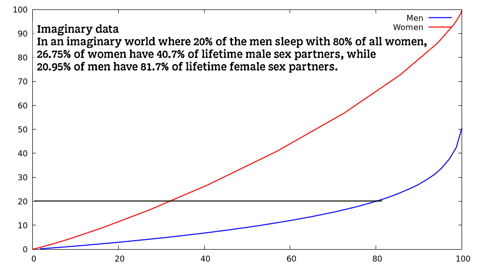
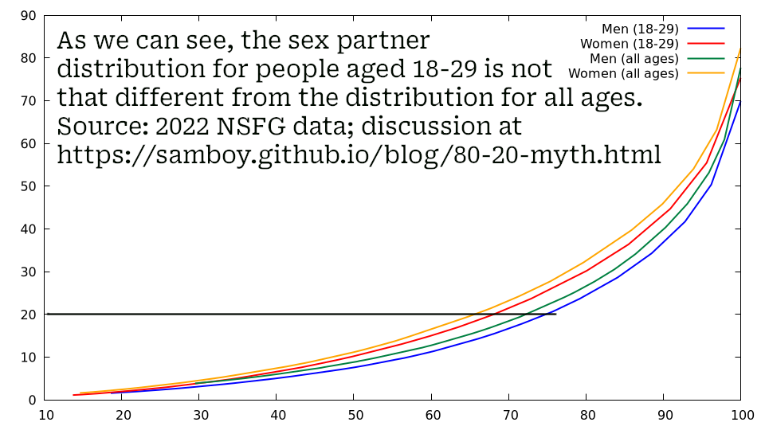

Sam Trenholme’s blog
The 80/20 sex myth
Index
- The myth explained
- The actual data
- Methodology
- The simulated incel fantasy
- Addressing incel comments
- What about the 18-29 year olds?
- Some final thoughts
- Further reading
The myth explained
An imaginary world where 20% of men have sex with 80% of women. In this graph, the further away the blue line representing men is away from the red line representing women, the more polygyny (men having multiple female sex partners, where the women are excusive with the man) there is. The dark grey line highlights the percentage of male and female partners the “top” 20% have.
There’s a famous scene in the Netflix series Adolescence where one of the characters tells the other character there is a myth online where 20% of the men sleep with 80% of the women. This hateful and misogynistic myth is one which gained ground in the 2010s among far right online communities, including the “incel” community.
Whether this myth originates from a comment by one Baumeister or from a 2008 OkCupid blog entry, it has become viral on social media, even though there is no scientific evidence to support this myth.1
That in mind, I have done some research myself to see whether this myth is true.
Let’s us imagine a world where 20% of the men have sex with 80% of the women. In this imaginary world, which I have modeled, we can see that women have a fairly linear distribution of sex partners; e.g. 26.75% of women have 40.7% of lifetime male sex partners and 99.80% of women have 100.0% of lifetime male sex partners.
Contrast this with the men in this incel fantasy, where 20.95% of men have 81.7% of lifetime female sex partners, and there is a nearly 50% male virginity rate.
The actual data
The actual NSFG 2022 data. This is a “banana curve”; since the curves representing women and men both bow downwards, this shows a relative minority of people are promiscuous. Since the lines are close to each other, there is not much polygyny, but instead promiscuous men by and large have sex with promiscuous women. The black line highlights the percentage of male and female partners the “top” 20% have.
For me to find the actual figures of reported sex partners, I looked up the 2022 NSFG data, where they asked about 10,000 men and women how many lifetime sex partners they have had.
I got the number of female lifetime sex partners from page 448 of the NSFG 2022 female codebook and male lifetime sex partners page 254 of the NSFG 2022 male codebook.2
I then took that data and made a graph of the data. Note in particular that:
- 32.18% of women have 79.7% of lifetime male sex partners
- 27.69% of men have 81.1% of lifetime female sex partners
- There is a 22.3% male virginity rate
Notably, both the men and women have what look to be a polynomial distribution of partners, instead of the reasonably linear distribution of partners among women we see when we model the imaginary 80/20 world incels have made up.
Also, the male and female partner count distributions are very similar to each other. This indicates that while about 20% of men have 70% of the lifetime female sex partners, about 20% of women also have about 70% of the lifetime male sex partners. So, while a small number of men do, in fact, have the majority of female sex partners, the women they are sleeping with, in turn, have a large number of male sex partners.
Methodology
The files used to process this data and generate these graphs are available here:
I will explain some of the methodology below.
The simulated incel fantasy
While it’s possible to choose, when a sexual encounter happens, to have the woman randomly choose one of the “alpha” guys 80% of the time and one of the “beta” guys 20% of the time, the code actually uses a curve.
Let’s look at the math to make such a curve:

In order to make the integration as simple as possible, let’s have f(x) be a polynomial:

Let’s integrate that equation:

Then simplify:

For n = 6,  is
about 0.7902848 and
is
about 0.7902848 and
 is about 0.8388608; those values
are close enough to 80/20 and keep the math relatively simple.3
is about 0.8388608; those values
are close enough to 80/20 and keep the math relatively simple.3
That in mind, we do the following when choosing which man will have a sexual encounter with a new partner:
- We choose a random point (x,y) where both x and y are random numbers between 0 and 1
- If the point ends up below the curve y=x6, we keep the values of x and y
- If the point is not below this curve, we choose another random point until we find one below the curve (maximum tries: 100 times)
- We then multiply x by 10,000 (the number of men in our simulation), round to the nearest integer, and that man will now have a sexual encounter
- Now that we have determined which man has a sexual encounter, we randomly choose which one of the 10,000 women in our simulation he will have the encounter with
As an aside, this is how we could calculate the precise value to give n for a given distribution of imaginary “alpha” men in the xn function (Note: n has a value of 6 in the actual simulation we ran):

When k has a value of 80% (0.8), this simulates 80/20 (80% of the women sleep with 20% of the men), and the above equation gives a precise solution for n in this equation:
By dividing those two logarithms and subtracting one, we create an exponential degree n such that the curve y = xn has the property that the area below the curve between 0 to 0.8 is one fourth of the area below the curve from 0.8 to 1. k, having a value of 80% (0.8), represents an imaginary world where 80% of the women sleep with 20% of the men.
If we want to create an curve representing a fantasy world where 90% of the women sleep with 10% of the men, k would have a value of 0.9 (90%) with that equation and that curve function. In the resulting curve, the area below the curve from 0 to 0.9 is one nineth of the area below the curve from 0.9 to 1. One nineth because 90 in 90/10 is nine times the value of 10.
To calculate this in Lua, here k is a number between 0 and 1:
function chad(k)
return math.log(1-k) /
math.log(k) - 1
end
For 80/20, the value of n is about 6.212567; for 90/10, the
value is about 20.8543; and for 95/5, the value is about 57.404.
Addressing incel comments
I will address some of the comments incels who refuse to believe this have made:
- 2011 NSFG figures give similar numbers: While the most promiscuous are less promiscuous, and the number of virgins was lower back then, the general trend of the most promiscuous women being roughly as promiscuous as the most promiscuous men was true. Other surveys besides NSFG give similar figures where notably the most promiscuous women are about as promiscuous as the most promiscuous men.
- I normalize for over/under reporting by looking at the percentage of total partners by gender.
- For women and men to lie such that the number of very promiscuous women is about the same as the number of very promiscuous men would require a conspiracy.
- Incels frequently change their argument, claiming that the fundamental claim isn’t that 80% of women sleep with 20% of men, but that 80% of women are attracted to only 20% of men. This is moving goalposts, but the claim that women are attracted to only 20% of men, or more precisely, that women are attracted to only 20% of men while ovulating, has been shown to be false.
- Incels claim that this article shows that 80% of the women sleep with 20% of the men. The article is exclusively about dating apps, which do not represent real world dating (dating apps are roughly 70% men and 30% women) and the article points out that men can get more swipes with better pictures. I blog elsewhere about how women can’t really build attraction from just a picture the way men often times do.
- As a follow-up to the last point, incels claim, based on a 2019 survey, that everyone meets each other these days on dating apps. These results have not been replicated; e.g. this 2024 survey shows that only 27% of people getting married met each other on a dating site or app.
- The issue with dating apps is that they are perceived to be for short term sexual hook ups. This explains why they are mostly men, and this explains why they don’t follow the patterns we see in the real world.
- Speaking of dating apps, this app has nearly seven women for every man. This is probably why: “Every member is screened for long-term intent. Casual daters are banned.”
- The claim that there are more single men than women in their 20s has been addressed in an article someone else wrote. To summarize: Slightly older men date slightly younger women.
- Some incels claim it’s different for people 18-29 years old. I have made a graph for 18-29 year olds, and the numbers are essentially the same. Further discussion below.
- One incel assertion is that twice as many women reproduce compared to men (either historically and/or presently). This is not true; see this discussion and this peer reviewed paper. To summarize: “1.4 [women reproduced for every man] in the Yoruba from West Africa, 1.3 in Europeans, and 1.1 in East Asian samples.”
- Incels claim “mid” women only want the most attractive of men, but a study shows that “We date, marry people who are attractive as we are”.
- Incels claim that men with high partner counts are more attractive to women, but that is not what the evidence says.
- Incels claim that only certain men are “alpha” men, and that women are only attracted to those “alphas”. The whole alpha/beta idea comes from studies which have since been discredited.
- Not an incel talking point per se, but it looks like only about 5% of men are actually incels.
The Nuance Pill has posted a lot of articles using extensive research to show that Incels are spreading lies. To wit:
-
While relatively few people are promiscuous, the rates are the same for women and men. Also, STD rates confirm people don’t lie on those surveys.
-
No, most women don’t sleep around in their 20s and settle in their 30s.
What about the 18-29 year olds?
NSFG 2022 data including data for just youth aged 18-29. The dark grey line highlights the percentage of male and female partners the “top” 20% have.
I have run the stats on just 18-29 year olds and the numbers are not that different than they are for all ages.
If anything, the trend of there being more virgins of both genders as well as the most promiscuous people being even more promiscuous continues: While the “top” 20% of men have more partners compared to all ages, the “top” 20% of women also have more partners.
In more detail:
- 20.66% of men (18-29) have 75.7% of lifetime female sex partners
- 19.96% of women (18-29) have 68.0% of lifetime male sex partners
- Virginity rates for 18-29 year olds: 30% men, 25% women
- 19.45% of men (all ages) have 71.5% of lifetime female sex partners
- 19.49% of women (all ages) have 64.8% of lifetime male sex partners
- Virginity rates for all ages: 22% men, 18% women
- The most promiscuous people have even more sex partners, for both men and women
- In particular, the difference between all ages and 18-29 is that the “top” 20% have 3-4% more of the lifetime partner count, again for both men and women
- Virginity rates are about 8% higher with younger people, once again for both men and women
Some final thoughts
There is a slight skew, where about 5% of men (if even that) are polygynic, and about 5% more men than women are virgins, but it’s nowhere near 80/20.
Further reading
- The Nunance Pill refutes the main “evidence” incels post claiming high polygyny
- The Misandry Bubble This is the 2010 article which started the “Red Pill” movement and the “Incel” 80/20 myth; the myth here is based on the false notion that two women have reproduced for every man who does (it’s more like 1.3).
Footnotes
1: The notion that women want to cheat on their male partners when they ovulate has been shown to be false.
2: Note that these are opposite sex intercourse partners.
3: 6.213 is closer to an ideal value for n to get an 80/20 curve, but 6 is good enough for this simulation.